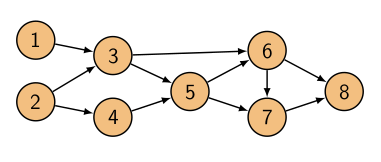
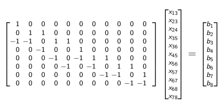

Daha önce işlediğimiz bu konuyu biraz daha genişletelim [1]. Sailco adlı hayali bir şirket düşünelim, bu şirket yelkenli tekne (sailbot) üretiyor. Problem şöyle, önümüzdeki 4 ay içinde alttaki üretim sayısını gerçekleştirmesi gerekiyor (müşteri talebi)
$$ \begin{array}{|c|c|c|c|c|} \hline \textrm{Ay} & 1 & 2 & 3 & 4 \\ \hline \textrm{Üretilen tekne sayısı} & 40 & 60 & 70 & 25 \\ \hline \end{array} $$
Birinci ayda 40, ikinci ayda 60, vs.. Şirketin bir deposu da var, bitmiş teknelerin teslim etmeden önce tutuldukları yer burası. 1. ayın başında bu depoda 10 tane tekne var. Her ay kaç tane tekne (ve nasıl) üretileceğini hesaplamam lazım, burada işçi turu ve depoda olanlar sayıyı etkiler tabii, mesela bir ayda 10 tane üretmem gerekiyorsa ve depoda zaten 10 tane varsa, hiç üretim yapmama gerek yok. Ama gelecekte çok fazla üretmem gerektiğini biliyorsam ekstra yapıp onları depoda tutabilirim, ki sonra gönderebileyim.
İşçi kısıtlaması şöyle, normal işçiyle 400 lira / tekne üzerinden fazla mesai ile 450 lira / tekne üzerinden üretim yapabilirim. Tek bir tekneyi depoda tutmak 20 lira. Ayrıca normal işçi ile ayda sadece 40 tekne yapabiliyorum, eğer o ayda daha fazla tekne yapmam gerekiyorsa fazla mesai kullanmam şart.
Problem şöyle, öyle bir üretim ve depolama takvimi planla ki önümüzdeki 4 aydaki üretimi minimum masrafla yapabileyim.
Karar değişkenleri neler olacak? Görüyorum ki bu tür problemlerle uğraşan bazı öğrenciler genelde az sayıda değişken kullanmaya meyilli, mesela "X ayında üretilecek tekne sayısı" gibi, ve beklenti o ki formüller işin gerisini halletsin. Yani mesela ilk ay bariz zaten, depoda 10 tane tekne var, geri kalanını ilk ayda normal işçilere yaptırırım çünkü bu en ucuzu. O zaman o ayda üretilen tekne sayısı değişkeni yeter, vs. Fakat göreceğiz ki bu tür yaklaşımlar aslında işi daha zorlaştırıyor. Aslında işimize yaramayabilecek ekstra değişkenler tanımlamak, sonra o değişkenleri kısıtlayıp probleme uygun şekilde dahil etmek daha kolay.
Biz de böyle yapacağız. Bir sürü değişken; mesela X ayı için kaç tane "normal işçi teknesi" üretilmesi gerektiği, yani bu sayı sadece normal işçiler tarafından üretilecek tekneleri kontrol edecek, fazla mesai için farklı olacak.. Her ay depoda kaç tekne tutulduğu ayrı sayılacak, her şey bir değişken olacak. Belki bu değişkenlerden bazıları fuzuli, hatta başka bir şeyi tekrar ediyor sanki, başka değişkenlerden türetilebilir gibi geliyor, olsun, yine de ekstra değişkeni koyun, ama diğer yandan aklınızdaki o kuralı probleme sınırlama olarak dahil edin.
Yani literaturde bu degiskenlere karar degiskenleri deniyor ama aslinda onlarin direk karar verdigimiz seyler olmasina gerek yok.
Degiskenler soyle,
$x_1,x_2,x_3,x_4$: her ayda normal iscilik ile uretilen tekne sayisi
$y_1,y_2,y_3,y_4$: her ayda fazla mesai ile uretilen tekne sayisi
$h_1,h_2,h_3,h_4,h_5$: her ay başında depoda olan tekne sayısı. 5 ay var çünkü ay sonundaki sayıyı $h_5$ değişkeninde tutuyoruz. Tabii problemi iyi anlayanlarımız farketmiştir ki bu değişkende sıfır değeri olmalı, tüm tekneler gönderilmiş olmalı.
Parametreler
Bunlar değişken değil dikkat, dışarıdan tanımlanan parametreler. Başta gördüğümü sayılar bunlar, her ay müşteriden gelen talep,
$d_1,d_2,d_3,d_4$: her ay için talep (demand).
Kisitlamalar
$0 \le x_i \le 40$, ki $i=1,2,3,4$: normal işçilikle üretilebilecek tekne sayısı, çünkü üstte belirttik, o tür üretimin sınırı bu
$y_i \ge 0$: fazla mesai ile üretilebilecek tekne sayısı sınırsız. Tabii ki negatif tekne üretilemez, o sebeple sıfırdan büyüklük var.
$h_i + x_i + y_i = d_i + h_{i+1}$: teknelerin muhafazası denklemi. Burada diyoruz ki her ay başında depodaki tekneler artı normal ve fazla mesai işçilik ile ürettiğim teknelerin toplamı, o aydaki talep ve sonraki aya kalacak depodaki teknelerin toplamı ile aynı olmalı.
Ayrıca $h_1=10$ olduğunu biliyoruz.
Önceki noktayı tekrar vurgulamak gerekirse üstteki $h$ değişkenlerini belki tanımlamam fuzuli, onları $h,d$'ler üzerinden de tanımlayabilirdim. Ama bu şekilde yapmak çok daha açık.
[atlandi]
Bu problemin lineer program olduğunu görebiliyoruz, ama hiçbir ağ akışı filan göstermedim. O zaman dersimizin başlığı niye ağ akışı? Çünkü bu problemi bir ağ yapısı içinden akış olarak görmek te oldukca doğal. Ağdaki 1,2,3,4 düğümleri aylar olacak, ve tekneler o aylar içinden "akıyorlar", eğer bir ay sonrasında depoya bir tekne koyuyorsak sanki o tekne geleceğe doğru gönderiliyor, sonraki aya veriliyor, o sebeple aylar arasındaki oklar $h_i$.
Tabii tüm tekneler bir aydan ötekine akmıyor, müşterilerin (customers) talebine göre o aydan onlara da belli sayıda tekne "akıyor", $d_i$ ile gösterilenler. Her aya giren akış üretim, R ile gösterilen normal işçilikle, OT ile gösterilen fazla mesai ile. Bu resimle problemi bir ağ akışı olarak göstermiş olduk.
Daha önce gördüğümüz muhafaza denklemi bu resimde daha bariz hale geldi, çünkü bu resimle aslında şunu söylüyoruz, her ay düğümüne giren akışlar çıkış akışlarına eşit olmalı. Bu hem kuvvetli bir ifade ama aynı anda bariz. Düğümler içinde bir şey tutmamalı, oradan sadece akış var.
Bugün genel olarak göreceğimiz konu minimum bedel akış problemleri olacak, ki üstteki problem bunun bir örneği. Pek çok optimizasyon problemi yönlü bir ağ üzerindeki akış olarak görülebiliyor.
Alttaki gibi bir ağ düşünelim,

8 tane düğümü var, bazı kenarları var. Bu ağdaki karar değişkenleri her kenardaki akış. Dikkat, karar değişkeni düğümde değil, kenarda. Bulmak istediğimiz bu akış çünkü, bilahere karar değişkenleri. Bu kenarların her birinde ne kadar akış var?
Her kenardaki akışın bir bedeli olabilir, ayrıca her kenarın bir kapasite sınırlaması olabilir (bedeli ne olursa olsun üzerine çıkılamayacak bir eşik değeri). Bedel örneği olarakl mesela bir kenar 2 lira/birimlik olabilir diğeri 10 lira/birim bedelinde olabilir. O zaman ilk kenardan 5 birim göndermek istersem bunun bana bedeli 10 lira ikincisinden gondermek istersem 50 lira olacak. Her kenarın akış bedeli, kapasitesi bizim dışarıdan bir parametre ile tanımladığımız bir şey olacak tabii ki. Kapasitenin illa sınırlanmış olması gerekmez, sınırsız da olabilir.
Her düğüm bir akış kaynağı (source) da olabilir, yani akışı kendi içinden "doğuruyor" olabilir. Bazı düğümler akışı yutuyor olabilir, onlara akış gelir ve yokolur, bu düğümlere alıcı (sink) diyebiliriz. O zaman önceki gördüğümüz sadece aktarıcı düğümlere ek olarak bu iki tip düğümü de kullanabiliriz. Üstteki resimde en soldaki iki düğüm kaynak gibi duruyor, oradan sadece çıkan akış görüyoruz. En sağdaki ise alıcı, ona akış sadece giriyor.
Optimizasyon probleminin sorduğu soru şu olacak, "en minimum bedelli akış hangisi?". Pek çok türlü akış olabilir, bizim aradığımız bedeli en az olan. Bugün göreceğimiz tüm problemler birer minimum bedelli akış problemi olarak formülize edilebilir. İlk önce en başta gördüğümüz problemi ağ yapısına tercüme edeceğiz, sonra diğer göreceğimiz problemlerin birer LP olup olmadığına bakacağız.
Düğümleri numaralandıralım,

Her akışı, karar değişkenini $x_{ij}$ olarak gösterebiliriz, ki $(i,j) \in \varepsilon$, 1'den 3'e akış $x_{13}$ olacak. Akış bedeli $c_{ij}$. Toplam bedel her akış çarpı o akışın bedeli toplanmış hali. Kapasite sınırları $p_{ij} \le x_{ij} \le q_{ij}$ ile gösterilebilir, her kenarın bir alt bir de üst sınırı olabilir ($p_{ij}$ çoğu problem için sıfırdır). Muhafaza denklemi, her düğüm $k$ için [1, 26:22]
$$ \sum_{j \in N} x_{kj} - \sum_{i \in N} x_{ik} = b_k, \quad \forall k \in N $$
Toplam bedel
$$ \sum_{(i,j) \in \varepsilon } c_{ij} x_{ij} $$
Üstteki ifade üzerinden toplam bedeli minimize eden akışı bulabiliriz.
Bu bir lineer program değil mi? Bedel lineer, lineer eşitlik, eşitsizlik sınırlamaları. Evet bu bir LP.
Formel ve öz bir şekilde yazmak gerekirse,
$$ \min_{x_{ij} \in \mathbb{R}} \sum_{(i,j) \in \varepsilon } c_{ij} x_{ij} \quad \textrm{öyle ki} $$ $$ \sum_{j \in N} x_{kj} - \sum_{i \in N} x_{ik} = b_k, \quad \forall k \in N $$ $$ p_{ij} \le x_{ij} \le q_{ij} $$
Şimdi muhafaza kısıtlamasına dönmek istiyorum, aslında bu formülü matris formunda yazmanın çok güzel bir yolu var.

Matrise $A$ sembolü verilir çoğunlukla ve ona oluş, geliş (incidence) matrisi denir. Örnek olarak sonuncu satıra bakalım, bu satır 8'inci düğüme olanları gösteriyor, $-x_{68}-x_{78}$ hesabı var, eksi işareti düğüme giriş göstergesi, ve sonuç $b_8$'e eşit.
$A$'da sadece 0, -1 ve +1 değerleri vardır ve eldeki düğüm kadar satırı vardır, ve eldeki kenar kadar kolonu vardır. Dikkat geliş matrisi sadece ağ yapısını kodlar, kenarlardan giden akış miktarı hala $x_{ij}$ değerlerinin kendisinde.
Eğer gereken yerde vektörler de kullanırsak en öz haliyle model şöyle,
$$ \min_{x \in \mathbb{R}^{|\varepsilon|}} c^T x, \quad \textrm{oyle ki} $$ $$ Ax = b $$ $$ p \le x \le q $$
Denge konusundan bahsedelim, minimum bedelli akış probleminin "dengeli" olması durumu var. Üstteki örnekteki gibi bir problemi düşünürsek, bazı düğümle kaynak, bazıları alıcı, tüm düğümlerdeki girenler çıkanlar sıfıra toplanır, o zaman tüm kaynakların toplamının da tüm talebin toplamına eşit olması beklenir. Çünkü ekstra kaynak varsa mesela tüm denklemleri tatmin etmek mümkün olmaz. Bunu ispatlayabiliriz, geliş matrisinin bir özelliği tüm kolonlarının toplamının sıfır olması, yani $1^T A = 0$. Ayrıca $Ax = b$'nin de doğru olduğunu biliyoruz çünkü çözeceğimiz sistemin bir kısıtlaması bu formül. O zaman alttaki de doğru olmalı,
$$ 1^T A x = 1^T b = 0 $$
Eşitliğin sağındaki $1^T b$ tüm $b$ öğelerinin toplamı demek, yani
$$ \sum _{i \in N} b_i = 0 $$
olmalı. Demek ki tüm arz tüm talebe eşit olacak. O zaman size $b$'sı sıfıra toplanmayan bir minimum bedel akış problemi verirsem bu problem olurlu olmayacaktır. Toplam sıfır ise bu probleme "dengeli problem" deniyor. Tabii dengeli bir modelin de illa olurlu olması şart değil, mesela öyle kapasite sınırlamaları getirebilirsiniz ki olurluluk mümkün olmaz, ama denge yoksa problem kesinlikle olurlu değildir.
Ama bazen dengesiz problemleri de ufak değişiklikler ile çözmek mümkün oluyor, mesela bazı $=$'leri $\le$ yaparak, ki bunun karşılığı ağa bir kukla (dummy) düğüm eklemek olabilir .. Ya da pay bırakma (slack) değişkenleri ekleyip bazı eşitsizlikleri eşitlikge çevirerek..
Örnek Alanlar
Ne kadar çok problemin minimum akış problemi olabildiği şaşırtıcı olabilir.
Nakliyat
Hedef belli bir mali birkaç kaynak noktasından farklı varış noktalarına ulaştırmak.
[devam edecek]
Kaynaklar
[1] Lessard, Introduction to Optimization, CS/ECE/ISyE 524, Lecture 5, University of Wisconsin-Madison, https://laurentlessard.com/teaching/524-intro-to-optimization